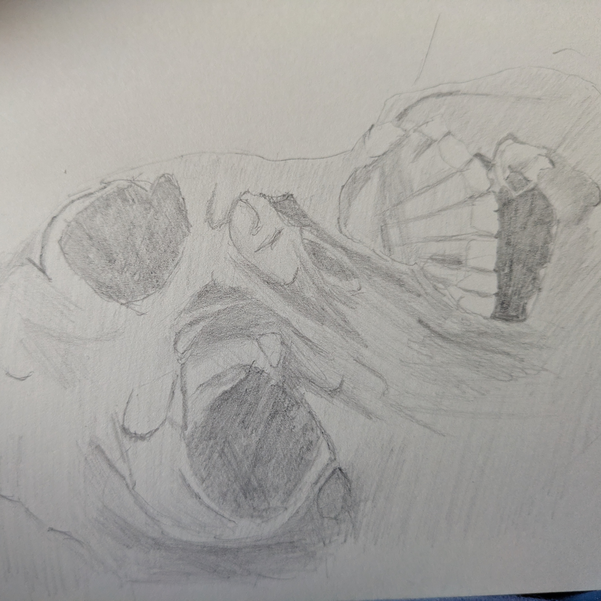

I’ve Been Reading: Shoot Me In The Face On A Beautiful Day, by Emma E. Murray
I finally got around to finishing this one after taking a break while my brain adjusted to working without antipsychotics (I got properly weaned off under medical supervision, nothing to worry about). My ability to focus was just not there at all for a period of almost two months, which has resulted in me falling far behind in both my reading goals and creative projects. Naturally, the first thing I did when my cerebral seas settled was pick up an exquisitely dark and troubling horror story. I’m nothing if not a firm believer in stress testing.
For those not familiar with Murray, she writes stories about messed up people doing terrible things. She does so in a way that provokes empathy almost as much as it unsettles the stomach. This is the second novel of hers that I’ve read and both have been transgressive and emotionally intelligent in equal measure. Murray straddles two streams in contemporary horror fiction, occupying both Extreme- and Literary- horror in a sort of gore-flecked quantum superposition. I’m into it, basically.
In Shoot Me In The Face On A Beautiful Day we’re following the story of the much-maligned Birdie as she endures domestic abuse and other forms of personal misery against the backdrop of a town that’s home to a serial killer. She’s the emotional core of the book and it’s through her that Murray explores the emotional complexity of being a victim of domestic violence, the strange changes that happen to a person that lives with a monster and thinks that’s what they deserve. It’s heart-breaking, truly. The second, and my favourite, perspective is that of a decomposing corpse, one of the aforementioned serial killers’ victims. It’s clear Murray did her research here; the depictions of the corpses slow decay are well-wrought and ring true. We also get to see the world of the book through the eyes of the killer and some of their victims. These chapters are the most challenging, to my mind. Despite the brutality of the acts depicted, the text never strays in gratuitousness or titillation, and for that I’m thankful. Murray’s taking her work seriously, giving the subject matter heavy respect and much diligence.
The writing is arguably a step up from Murray’s previous novel, Crushing Snails. Though that book was certainly no slouch, the voice this time around feels a little braver. Each character is a little more distinct, each depraved act a little more stark. The structure, too, seems a little more refined. Murray has split the story into six parts, chronicling the slow breakdown of the body whose perspective starts each section (Fresh, Bloat, Putrefaction, Advanced Decay, Skeletonization, Burial). Thematically it’s intelligent, the events in Birdie’s life and the revelations of what’s led her to that point mirroring the stage presented. I’ll not delve into too much detail here, but I think a particularly dark and twisted lit student could write a banger of an essay about the second section, Bloat. Something that hasn’t changed since the previous novel is Murray’s lovely, deceptive rhythm. Unpretentious writing arranged in such a way that it flows through you, occasionally taking a chunk out of your heart when the story demands.

My favourite character
In summary, this is a really impressive book. Transgressive but beautiful, brutal but empathetic. Poetic where it can be and clinical where it must be, this is unquestionably a top 3 read of the year for me.
That’s all from me.
Toodles,
–Antony F.